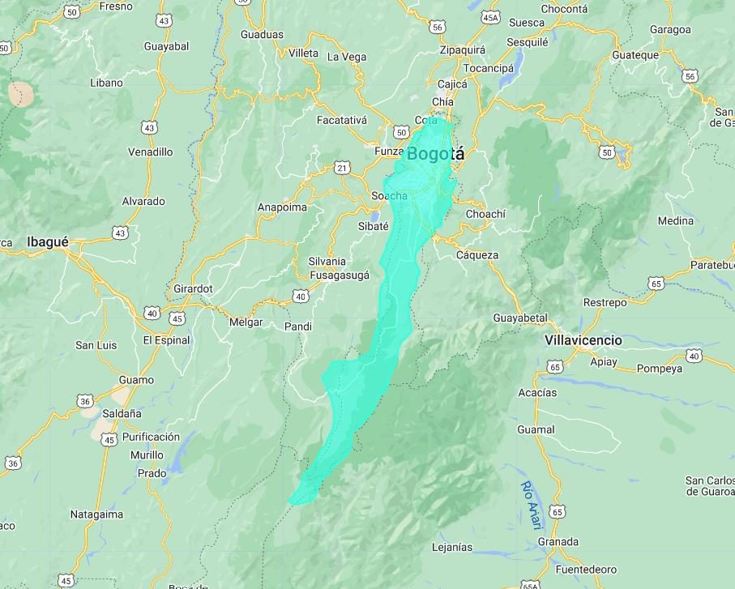
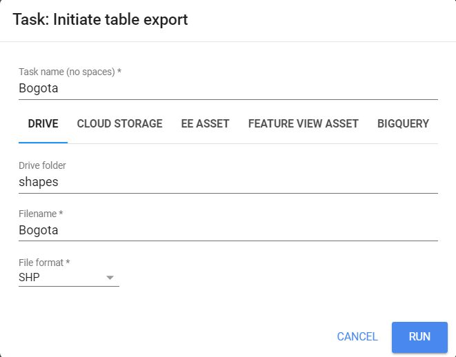

Descargar shapefiles de Google Earth Engine
Aprende en pocos minutos a descargar correctamente un shapefile desde Google Earth Engine con Export.table.toDrive.
Introducción #
En esta guía nos centraremos en el proceso de exportación de datos vectoriales desde Google Earth Engine. Usaremos un ejemplo práctico para cargar una colección de datos vectoriales, visualizarla en el mapa y luego exportarla en formato shapefile a través de Google Drive.
Objetivo #
- Aprender a exportar datos vectoriales desde Google Earth Engine.
Recursos usados #
¿Cómo se exportan datos vectoriales? #
En Earth Engine los datos vectoriales son FeatureCollection. Para llevarlos a tu computador se usa la familia de funciones Export.table, que crea una tarea en la pestaña Tasks. La tarea se procesa en los servidores de Google y el archivo llega a su destino cuando termina.
| Función | Destino |
|---|---|
| Export.table.toDrive | Tu Google Drive. Es la opción más común. |
| Export.table.toAsset | Tus assets de Earth Engine, para reutilizar la capa en otros scripts. |
| Export.table.toCloudStorage | Un bucket de Google Cloud Storage. |
Con el parámetro fileFormat eliges el formato del archivo, y estos son los más usados.
| Formato | Uso habitual |
|---|---|
| SHP | Shapefile para QGIS, ArcGIS Pro y la mayoría de programas SIG. |
| GeoJSON | Formato de texto muy usado en la web. |
| KML / KMZ | Para abrir en Google Earth Pro. |
| CSV | Tabla de atributos; la geometría se guarda como texto. |
Ten en cuenta que un shapefile admite un solo tipo de geometría. Si tu colección mezcla puntos y polígonos, expórtala en GeoJSON o sepárala antes.
Paso 1: Cargar los datos #
Cargamos la colección de ciudades con ee.FeatureCollection() y la guardamos en la variable cities.
// Cargar Feature collection de ciudades var cities = ee.FeatureCollection("FAO/GAUL_SIMPLIFIED_500m/2015/level2"); print("Ciudades: ", cities.limit(30));
Paso 2: Filtrar los datos #
Filtramos las entidades con filterMetadata() para quedarnos solo con la ciudad cuyo nombre es "Santafe De Bogota D.c." y la guardamos en la variable Bogota.
var Bogota = cities.filterMetadata("ADM2_NAME", "equals", "Santafe De Bogota D.c.");
Paso 3: Visualizar los datos #
Centramos el mapa en la entidad filtrada con Map.centerObject() y la agregamos como capa con Map.addLayer() usando un color específico.
// Visualizar la colección de ciudades en el mapa Map.centerObject(Bogota, 10); Map.addLayer(Bogota, {color: "#31FFE0"}, "Bogotá");

Paso 4: Exportar los datos #
Exportamos la entidad filtrada a Google Drive en formato shapefile (SHP) con Export.table.toDrive(). Indicamos la colección (Bogota), una descripción para el archivo de salida ("Bogota"), la carpeta de destino en Google Drive ("shapes") y el formato deseado ("SHP").
// Exportar la colección de ciudades a Google Drive en formato Shapefile Export.table.toDrive({ collection: Bogota, description: "Bogota", folder: "shapes", fileFormat: "SHP" });
Luego vamos al panel derecho, abrimos la pestaña Tasks y ejecutamos la tarea con Run.

Cuando la tarea termina, el shapefile queda en la carpeta "shapes" de tu Google Drive, listo para abrirlo en QGIS, ArcGIS Pro u otro programa SIG.
Código completo #
Este es el script completo del tutorial. Cópialo, pégalo en el Code Editor y presiona Run. Luego ejecuta la exportación desde la pestaña Tasks.
// Cargar Feature collection de ciudades var cities = ee.FeatureCollection("FAO/GAUL_SIMPLIFIED_500m/2015/level2"); print("Ciudades: ", cities.limit(30)); // Filtrar la colección para obtener solo Bogotá var Bogota = cities.filterMetadata("ADM2_NAME", "equals", "Santafe De Bogota D.c."); // Visualizar la colección de ciudades en el mapa Map.centerObject(Bogota, 10); Map.addLayer(Bogota, {color: "#31FFE0"}, "Bogotá"); // Exportar la colección de ciudades a Google Drive en formato Shapefile Export.table.toDrive({ collection: Bogota, description: "Bogota", folder: "shapes", fileFormat: "SHP" });
Conclusiones #
Con esta guía aprendimos a exportar datos vectoriales desde Google Earth Engine. Los cargamos, los vimos en el mapa y los llevamos a Google Drive en formato vectorial, listos para seguir trabajando en otros programas SIG.